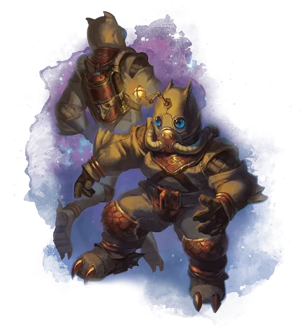

Костюм рыбы
Fish Suit
Чудесный предмет, очень редкий

Рекомендованная стоимость 5 001-50 000 зм
Этот громоздкий костюм, полностью закрывающий ваши тело и голову, надевается и снимается за 1 минуту. Пока он надет, то позволяет вам дышать в безвоздушной среде и даёт вам иммунитет к вредному воздействию любого окружающего вас газа. Кроме того, под водой костюм даёт вам скорость плавания, равную вашей скорости ходьбы, а в среде без гравитации — скорость полёта, равную вашей скорости ходьбы.